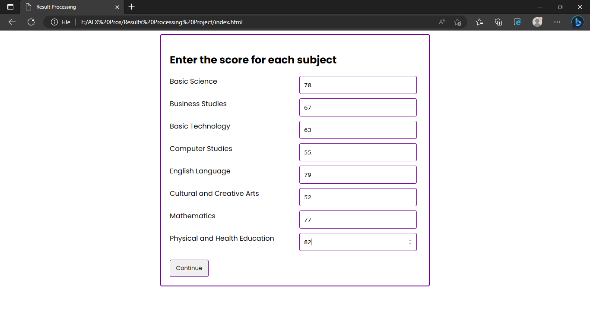
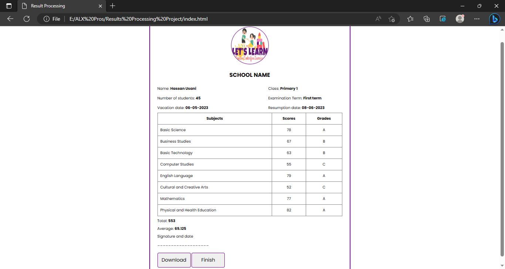

Hi, over there!
I am currently working on a result processing project application. The application, if completed successfully, will help school teachers to process the results of their students. Furthermore, the result can be downloaded as a PDF file with the file name as the name of of the student.
Feature
Did you see the screenshot up there? It was taken from one the sections in the application. As you can see, the section contains the names of the subjects selected along with number fields. (Only numbers are allowed in the fields.) The number fields are created automatically depending on the number of subjects selected.
The screenshot above shows the sample of the result. After the all the scores are entered, the application will calculate the total of the scores and the average, and then creates a table which shows them. The grades shown in the tables are obtained by comparing the score of each subject with some certain range. The final result is a table containing selected subjects, their scores and their grades, the total mark, the average, as well as some basic information as seen in the screenshot.
About
All applications are built with the intension solve some problems and are expected to solve the problem when completed. There many schools around the world. Each school carry out terminal examinations and the results of the students needs to be processed. I have been a school teacher for some years and one of the difficult things I face as well as my colleagues is processing students' examination results. It takes time especially if the number of students are much. We have to sit with calculators computing the examination scores and the examination average. Due to the cumbersome nature of the work, some unnoticed errors may occur during the processing. Therefore, proofreading becomes necessary to correct the error(s) made. With the skills I obtained from Holberton School, the application I am currently working will automate all the calculations. The few things the user has to do are to enter the student's name, the student's class, the examination term, select the subjects offered, enter the score for each subject, and finally download the result as a PDF document which will be saved with the student's name. Furthermore, this is my portfolio for Holberton School.
Use theGitHub linkto see the source code.

Gallery

Contact
Feel free to contact me:
aminunawwarah@gmail.com
aminuadam99@gmail.com
LinkedIn: See profile
GitHub: See repositories